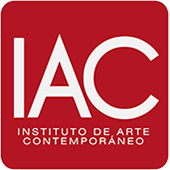

InscripcionesColegio artístico de educación básica con atención personalizada, y academia con clases presenciales para niños, adolescentes, jóvenes y adultos.
Pedir una entrevista por WhatsAppDesde 2019, colegio de educación básica bajo la Ley de Educación Libre, con atención personalizada y grupo reducido de alumnos.
Clases presenciales de instrumento y de taller grupal, para alumnos de todas las edades: niños, adolescentes, jóvenes y adultos.